안녕하세요. 우슬라임님! 인터뷰에 참여해주셔서 감사합니다. 먼저 간단한 자기소개 부탁드리겠습니다.
안녕하세요. 우슬라임입니다. 이렇게 인터뷰할 수 있는 자리를 마련해주셔서 감사합니다.
최근에는 어떻게 지내고 계셨나요? 앨범 작업으로 굉장히 바쁘셨을 것 같아요.
작년 11월~12월쯤부터 앨범 작업을 시작한 것 같아요. 생각보다 준비 기간이 길지는 않았는데, 뮤직비디오도 거의 매달 촬영하면서 계속 바쁘게 지냈던 것 같네요.
얼마 전에 미국에도 다녀오셨죠.
아, 시카고 공연 때문에 다녀왔어요. 확실히 시카고는 저랑 안 맞더라고요. 음식도 그렇고, 무엇보다 너무 추웠어요. 추운 거 별로 안 좋아하거든요. 캘리포니아랑은 분위기 자체가 너무 달라요(웃음).
이번 앨범은 우슬라임으로 이름을 바꾼 뒤 [WUUSLIME], [Bookkyungbanjeom]을 거쳐 선보이는 새로운 정규앨범입니다. 작업하면서도 마음가짐이 조금 달랐을 것 같은데 어떠셨나요?
제일 편하게 작업한 앨범인 것 같아요. 뭔가 딱 하나를 정해놓고 만든 앨범이라기보다는 좀 더 나다운 것을 보려주려고 했던 것 같아요.
지금은 인디펜던트로 활동하고 계시고, 칠린호미에서 우슬라임으로 이름도 바꾸셨잖아요. 그동안 이 이야기를 깊게 한 적은 많지 않았던 것 같은데, 랩네임을 바꾸게 된 계기를 들려주실 수 있을까요?
어렸을 때부터 칠린호미로 활동하면서 여러 앨범을 냈고 다양한 스타일을 경험했어요. 그런 시간을 충분히 거친 뒤에 인지도가 생겼다면 지금처럼 자연스럽게 음악을 할 수 있었을 것 같아요. 그런데 준비가 안 된 상태에서 갑자기 너무 잘돼 버린 거예요. 그래서 계속 답을 찾으려고 시행착오를 많이 겪었던 것 같습니다.
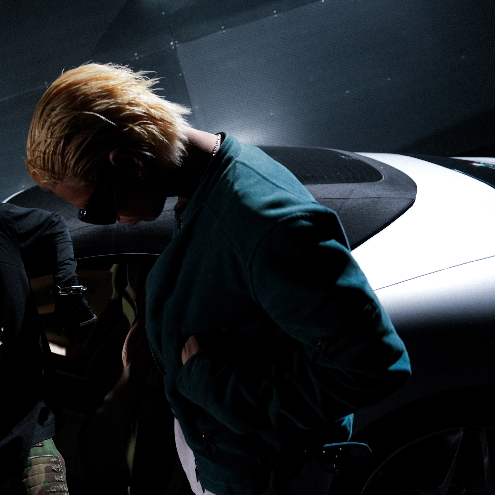
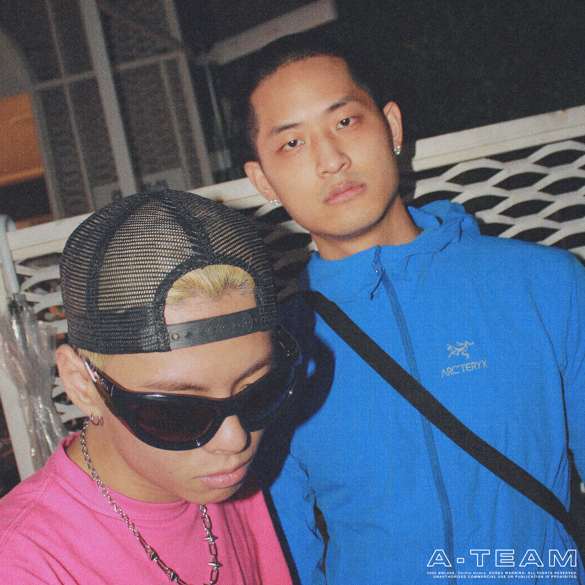
블라세 형과 함께한 [A-TEAM]이라는 앨범이 잘됐어요. 처음으로 성과를 경험하다 보니 ‘아, 나는 이런 음악을 해야 하나 보다, 그럼 UK 스타일로 가봐야겠다’는 생각을 했죠. 항상 그런 식으로 결과에 맞춰 움직였던 것 같아요. 물론 작업 자체는 정말 재미있었어요. [Maze Runner]도 엄청 몰입해서, 홀린 듯이 만들고. 근데 정작 그 이후에 길을 잃어버렸어요.
지금 돌이켜보면 따라 하고 있는 거였어요. 음악을 하려면 자기만의 오리지널리티가 있어야 한다고 생각하는데, 저는 영국 영어를 쓰는 사람도 아니니 그냥 흉내를 내고 있었던 거죠. [Maze Runner]를 만들 때도 UK 음악을 막 공부하듯 들었는데, 평소 제가 즐겨 듣는 음악은 애틀랜타나 플로리다 쪽이거든요. 오히려 그전 믹스테이프 [Group 8]을 만들 때가 가장 편하게 작업했던 시기였던 것 같아요. 그래서 캘리포니아, LA로 떠났죠. 저는 항상 답을 찾으러 어딘가로 떠나는 사람인데, 가서 정말 아무 생각 없이 랩만 했던 것 같아요.
그러다 자연스럽게 이름을 바꿔야겠다는 생각이 들었어요. 지금까지의 크레딧을 모두 내려놓고 싶었어요. 정말 마지막이라고 생각하고 딱 1년만 아무 눈치 보지 말고, 피드백도 신경 쓰지 말고 하고 싶은 음악을 만들어 보자, 그것마저 안 되면 내려놓자는 마음이었어요. 플랜 B를 위한 브랜드 준비도 그때 시작했고요.
그렇게 작업하니까 음악과 가사에 대한 접근이 달라지더라고요. 이전에는 멋있어 보이는 가사나 플로우, 스킬풀한 모습을 보여주는 데 치중하는 편이었는데, 이런 욕심을 내려놓으니 너무 편안했어요. 그 순간 이제는 정말 바뀌어야겠다는 확신이 생기더라고요. 사실 한글 가사를 쓰는 것도 저한테는 어려운 일이거든요.
물론 오랫동안 칠린호미라는 이름으로 활동해 온 만큼, 이름을 바꾸는 결정 자체보다 그 시간을 뒤로 하고 새롭게 시작하는 일이 더 걱정됐습니다. 그래도 '딱 1년만 내가 하고 싶은 걸 해보자'는 마음으로 새로운 이름을 선택하게 된 것 같습니다.
칠린호미 시절에는 외부의 반응이나 결과에 따라 움직였다면, 우슬라임이라는 이름으로는 조금 더 주체적으로, 내가 원하는 음악을 해보겠다는 결심이었던 거네요.
그때의 저는 음악을 잘 몰랐던 것 같아요. 쇼미더머니가 잘못됐다는 게 아니에요. 저도 쇼미더머니를 보고 음악을 시작했고, 쇼미더머니를 통해 이름이 알려졌으니까요. 그런데 지나고 나서 생각해 보니 저는 훅도 제대로 못 쓰고, 노래다운 노래를 만들 수 없는 아티스트였어요. 스스로에게 좀 부끄럽게 다가왔어요. 음악을 정말 좋아하는데, 음악을 좋아하는 사람이 그런 걸 못 한다는 건 말이 안 된다는 생각이 들더라고요.
어떻게 보면 우슬라임으로의 변화는 배수진 같은 선택이었겠네요.
취미로라도 음악은 계속했을 것 같지만 나이가 들면서 책임져야 하는 부분들이 생기잖아요. 그래서 진짜 모든 것을 다 걸고 내가 하고 싶은 걸 해보자는 마인드였죠.
다행히도 우슬라임으로서의 행보가 굉장히 좋은 반응을 얻었어요. '내가 가고자 했던 길이 맞았구나'라는 생각도 들었을 것 같은데요.
당연히 들었고, 기분도 정말 좋았죠. 한편으로는 '이걸 조금 더 일찍 알았으면 어땠을까'라는 생각도 있어요. 근데 또 과거의 경험이 있었기 때문에 지금의 결론에 도달한 거라고 생각해요. 무엇보다 스스로에 대한 믿음이 훨씬 커졌던 시기였던 것 같습니다.
음원 플랫폼을 보면 칠린호미와 우슬라임의 디스코그래피가 완전히 분리되어 있더라고요. 보통은 이름을 바꾸더라도 커리어가 이어지는 경우가 많은데, 이것도 의도하신 부분인가요?
네, 의도한 거예요. 이 둘은 정말 다른 아이덴티티라고 생각했어요. MBTI가 바뀔 정도예요. 원래는 INFP였는데 지금은 ISTP가 됐거든요(웃음).
그리고 지금의 제 음악을 듣는 데 있어 몰입감을 주고 싶었어요. 디스코그래피가 묶여 있으면 랜덤 재생을 했을 때 예전 곡과 지금 곡이 섞이게 되잖아요. 저는 그게 우슬라임이라는 캐릭터를 보여주는 데 방해가 될 수도 있겠다고 생각하거든요. 주변에서도 굳이 지금까지 쌓아온 크레딧을 포기할 필요가 있냐는 이야기를 많이 했는데, 저는 의외로 쉽게 결정했던 것 같아요. 그냥 새롭게 시작하고 싶다는 마음이 더 컸어요.
예전부터 팬이셨던 분들은 아직도 칠린호미라고 부르시는 경우가 있을 것 같은데요.
그때마다 "우슬라임으로 이름을 바꿨다"고 정정해 드립니다(웃음).
그렇다면 칠린호미는 지금의 우슬라임에게 어떤 존재일까요?
과거의 저죠. 그때의 모습을 부정하지는 않아요. 다만 지금 공연에서 칠린호미 시절 곡은 거의 하지 않아요. 사실상 한 적도 없고요. 제 과거지만, 지금의 저는 아니에요.
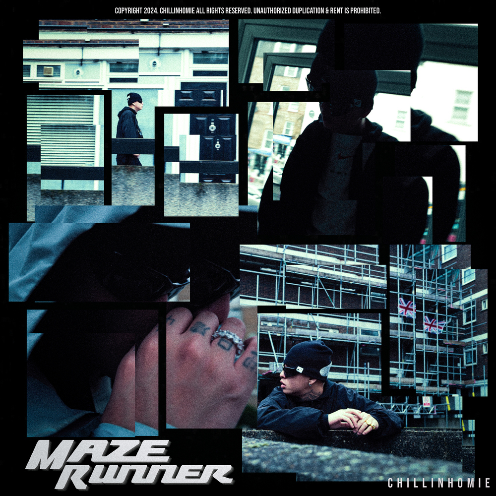
이름을 바꾸고 처음 발표한 앨범이 [WUUSLIME]이었습니다. 우슬라임이라는 새로운 정체성을 처음 보여준 작품이죠.
2024년 9월쯤, 이름을 바꾸기로 결정한 뒤 정말 많은 작업을 가졌어요. 세션이 있는 곳은 거의 다 찾아가 보고, 최대한 많은 경험을 하려고 했죠. 랩 스타일, 톤도 많이 바뀌었고, 전반적으로 모든 부분이 달라진 제 모습이 담긴 작품이라고 생각해요. 물론 시행착오도 있었지만 이 앨범 자체가 제 리브랜딩에 굉장히 집중한 결과물이었다고 생각해요. 아예 달라진 모습을 보여주고 싶었거든요.
리브랜딩이라는 측면에서 어느 정도 성공했다고 볼 수 있겠네요. 작업실로 오는 길에 앨범 이야기를 잠깐 나눴잖아요. 지금 돌아보면 아쉬운 부분도 있다고 말씀하셨는데 어떤 점이 그랬나요? 개인적으로는 음악적으로도 굉장히 재미있게 들었던 앨범이었거든요.
제 이름을 리브랜딩하는 데 목적을 둔 앨범이라고 생각하면 충분히 정규앨범이라고 할 수 있다고 생각해요. 하지만 지금 와서 보니 트랙 간의 유기성이나 앨범 전체의 구성 측면에서는 아쉬운 부분들이 보이더라고요. 이번 앨범도 이때의 시행착오를 많이 반영해서 만든 앨범이에요.
당시에도 식케이 형이나 휘민이 형 같은 분들이 피드백을 주셨거든요. "조금 아쉽긴 한데, 그래도 네가 내고 싶다면 내라."고. 그래서 그때는 그냥 냈는데, 지금 와서 보니 그 말들이 이해되더라고요. 아, 물론 랩이 아쉬웠다는 건 아니에요(웃음).
정규앨범이 가져야 하는 서사나 구성같은 부분이 조금 아쉬웠다는 말씀이시군요. 정규앨범과 믹스테이프, EP를 나누는 가장 중요한 기준은 무엇이라고 생각하시나요?
구성인 것 같아요. 그리고 트랙이 갖고 있는 무게.
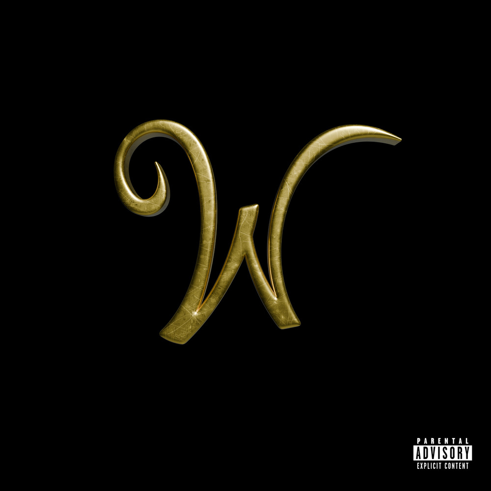
이후에는 샤이보이토비님과 함께한 믹스테이프 [Bookkyungbanjeom]을 발표하였습니다.
토비랑 굉장히 가깝게 지내고 있어요. 집도 가깝고 작업실도 가까워서 자연스럽게 자주 만나거든요. 그러다 보니 매일같이 같이 랩을 하게 됐어요. 이럴 거면 앨범 하나 만들자고 해서 계속 곡을 만들었는데, 아마 50곡 이상 만들었던 것 같아요. 이게 자연스럽게 믹스테입으로 이어진 것 같습니다.
그 중에서 선별 과정을 거쳐 완성되었겠네요.
일단 곡을 많이 만들어 놓고, 그중에서 선별한 다음 새롭게 추가할 곡들을 더하면서 큐레이션했어요. 이 믹스테이프에서 의도했던 건, 사람들이 이걸 들었을 때 토비와 저의 관계가 자연스럽게 느껴졌으면 좋겠다는 거였어요. 굳이 귀엽게 표현하자면 친구 같은 느낌? 편하게 들을 수 있는 이지 리스닝 앨범이었으면 좋겠다고 생각했고, 저희 둘이 즐겁고 편하게 작업했던 모습이 음악 안에서도 그대로 전해졌으면 좋겠다고 생각했습니다.
이 다음에 발표한 작품이 새로운 정규앨범인 [TONE]입니다. 어떤 앨범인지 소개 부탁드릴게요.
인간 전우성과 래퍼 우슬라임이 하나가 된 듯한 앨범이라고 보시면 될 것 같아요. 예전에는 그 둘 사이에 차이가 있었다면,이제는 그 차이가 많이 좁혀졌거든요.
인간적인 면모와 뮤지션으로서의 모습이 함께 드러나는 작품이라고 볼 수 있겠네요. [TONE]이라는 제목에는 어떤 의미가 담겨 있나요?
목소리의 톤일 수도 있고, 색감의 톤일 수도 있겠네요. 저는 이걸 ‘살아가는 감도’라고 생각해요. 제가 살고 있는 삶, 제가 바라보는 세상, 그리고 제가 살고 싶어 하는 세상. 그런 것들의 색을 담은 굉장히 개인적인 앨범입니다.
어떻게 보면 우슬라임님의 ‘라이프스타일이 가진 톤’을 보여주는 앨범이라고 볼 수도 있겠네요. 이 과정에서 좀 더 확실하게 드러내고 싶었던 부분도 있었을까요?
랩을 잘한다는 걸 보여주고 싶은 마음은 언제나 있었고, 이번에는 무엇보다 제 스타일리시한 면모를 많이 보여주고 싶었어요. 첫 정규앨범에서 아쉬웠던 구성이나 음악적인 부분도 이번에는 더 잘 담아내고 싶었습니다.
이번 앨범을 들어주시는 분들이 저라는 사람을 조금 더 느껴주셨으면 좋겠어요. 그동안 제가 보여드린 랩은 대부분 강한 분위기였잖아요. 그런데 사실 실제 저는 그렇게 강한 사람은 아니에요. 센 음악을 좋아했고 그런 랩을 계속 해오다 보니, 자연스럽게 그런 이미지가 만들어진 것 같습니다.
이제는 저를 표현할 수 있는 능력이 조금 생겼다고 생각해요. 예전에는 제 이야기를 하는 게 조금 부끄럽기도 했고, 이런 톤으로 랩을 해본 적도 없었거든요. 그런데 이번에는 저의 모습이 훨씬 자연스럽게 담겼어요. 이 앨범을 들으면서 사람들이 저의 따뜻한 면이나 말랑말랑한 면까지 함께 느껴주셨으면 좋겠습니다. 마치 슬라임같은(웃음).
우슬라임이라는 아티스트의 내면에 있는 인간적인 모습을 알아봐 주길 바란다는 말씀이시네요.
네, 맞아요. 지금의 이미지가 제 진짜 모습에 훨씬 가까워졌다고 생각해요.
그렇다면 이번 앨범의 참여진들도 이런 방향성을 고려해서 구성하신 건가요?
친한 친구들이 우선이긴 했지만, 피처링을 정할 때 가장 중요하게 생각한 건 이 앨범의 전체적인 그림과 잘 어울리는지였어요. 목소리의 톤도 맞아야 했고, 비주얼적인 이미지도 제 작품과 자연스럽게 어우러져야 했고요. 카톤이나 러버보이 같은 경우에는 원래 친분이 없었는데, 같이 작업해보고 싶다는 생각으로 함께하게 됐어요. 저는 어린 친구들이 잘됐으면 좋겠다는 마음이 큰 편이거든요.
반대로 뮤직비디오는 정말 저와 가까운 사람들만 출연했어요. 오카시나 GROUP8 친구들처럼 실제로 함께 작업하고 시간을 보내는 사람들. 뮤직비디오에서 제가 평소 어떤 사람들과 어울리고, 어떤 바이브를 나누며 살아가는지를 보여주는 게 더 좋겠다고 생각했습니다.
[TONE]에는 단순히 청각적인 의미 뿐 아니라 시각적인 부분까지 함께 고려된 것 같네요.
저는 시각적인 요소를 굉장히 중요하게 생각해요. 뮤직비디오를 찍는 것도 좋아하고, 보는 것도 좋아해요. 음악도 영상이 함께할 때 더 몰입할 수 있다고 생각하거든요. 그래서 뮤직비디오도 항상 공을 들여 만드는 편입니다.
그렇다면 시각적인 관점에서 봤을 때 이번 앨범을 대표하는 메인 컬러는 무엇이라고 생각하시나요?
하늘색인 것 같네요. 다만 앨범 전체를 하나의 색으로 설명하기는 어려워요. 후반부로 갈수록 조금 더 어둡거나 차가운 분위기의 트랙들도 있어서 안에는 여러 색이 함께 들어 있는 것 같아요.
정말 앨범을 들으면서 하루 동안 하늘의 색이 변하는 걸 바라보는 느낌을 받기도 했어요.
저는 이 앨범을 '제가 살고 싶은 세상'이라고 생각하거든요. LA의 하늘을 정말 좋아해요. 실제로 앨범 커버아트도 LA에서 촬영했고요.
LA를 굉장히 좋아하시는 것 같아요.
22살 쯤부터 거의 매년 가고 있는데 apgettingbaked, AP형 집에서 지내거든요. 슬라임도, 애틀랜타 랩도 그 형이 처음 들려줬어요. 같이 드라이브하면서 음악 듣고 랩도 하고, 그 시간이 너무 재미있어요.
한국에 있을 때는 늘 어딘가 날이 서 있는 상태인데, LA에 가면 아무 생각 없이 그냥 랩만 하게 돼요. 그 자체가 너무 좋았어요. 내가 이렇게 살고 싶어서 음악을 하는 건가?라는 생각도 들었고요. 그래서 힘들거나 생각이 많아지면 그냥 거기로 훌쩍 가서 랩만 합니다(웃음).
"Yes Indeed"에도 30대에 이민 갈 거라는 가사가 있잖아요. 정말로 이민까지 생각하고 계신 건가요?
내년부터 3개월, 6개월 정도씩 살아보려고 생각하고 있어요. 직접 살아보면서 제가 정말 원하는 삶인지 직접 확인해보려고요.
우슬라임님께 캘리포니아는 어떤 의미를 가진 공간인가요?
제가 가장 좋아하는 곳이에요. 어디를 여행 가도 캘리포니아가 제일 좋더라고요. 상징적인 무언가가 있다기보다는, 그냥 제가 살고 싶은 세상에 가까운 것 같아요.
‘삶의 방식’ 측면으로.
맞아요. 그래서 서울에서도 그렇게 살려고 항상 노력하는 것 같아요. 여행을 다녀오고 돌아오면 항상 아쉽잖아요. 그래서 저는 서울을 여행 온 곳이라고 생각하면서 살려고 해요. 그렇게 생각하니 조금 더 즐겁게 살 수 있겠더라고요(웃음).
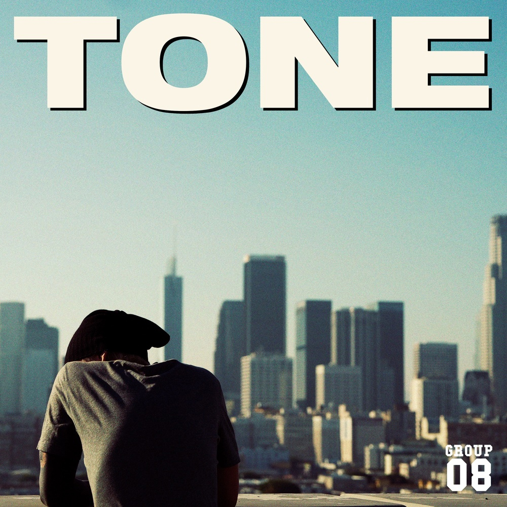
트랙 중에 "SHOTDIRECTEDBY01" 이야기도 해보고 싶어요. 비주얼 디렉터이신 Directed by 01님을 의미하는 거죠?
네, 뒤에 숫자는 공일이라고 읽어도 되고, 제로원이라고 읽어주셔도 되고.
어떤 계기로 만들어지게 된 곡인가요?
01, 오지환 감독님은 Naughty 4 Life 때부터 함께했고, 칠린호미 시절 제 첫 뮤직비디오도 작업해주셨어요. 저희를 가장 멋있게 담아주는 사람이 바로 지환이거든요. 레이 형까지 포함해서 정말 가족 같은 10년지기 친구들이죠.
지금까지 친구들에 대한 이야기는 늘 가사 한 줄 정도로만 풀었는데, 이번에는 '이 장면들은 모두 지환이가 담았다'는 이야기도 음악 안에 남기고 싶었어요. 덕분에 앨범에서 우리의 관계가 훨씬 자연스럽게 드러난 것 같아요.
보통 사람들은 음악을 들을 때 아티스트에게만 집중하지, 함께 작업하는 프로듀서나 비주얼 디렉터에게까지 관심을 갖는 경우는 많지 않잖아요. 굉장히 좋은 조명인 것 같아요.
지환이도, 다른 동료들도 모두 제 세계관의 일부가 되어주고 있어요. 뮤직비디오 세팅이나 스타일링 같은 것도 늘 함께 이야기하면서 만들거든요. 도움을 주는 사람을 넘어 제 시야를 넓혀주는 친구들이에요. 덕분에 미감도 훨씬 좋아지고요.
캘리포니아도 항상 같이 가요. 같이 쉬고, 같이 촬영하고, 영상을 만들죠. 심리적으로도 많은 도움을 주는 친구예요. 사실상 가족 같은 존재죠. 제 삶의 일부라고 생각합니다(웃음).
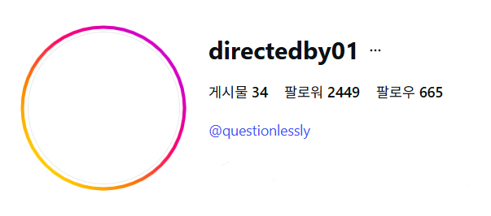
이번 앨범과 관련된 비주얼 작업이 굉장히 많이 진행된 것 같은데요. 뮤직비디오도 많이 나오고 있어요.
예전에 공개된 “LIFES LIKE”도 지환이 작품이고, “SHOTDIRECTEDBY01”을 비롯해 현재 여섯 트랙 정도 촬영했어요. LA에서도 촬영했고, 한국에서도 여러 편을 찍어놨어요.
근데 영상 쪽은 제가 많이 관여하지는 않는 편이에요. 저희도 각자 맡은 포지션이 있거든요. 초기 단계에서는 같이 이야기하지만, 어느 정도 방향이 잡히면 저는 거의 믿고 맡겨요. 제가 너무 많이 건드리면 결과물이 오히려 안 좋아질 수도 있다고 생각하거든요. 비주얼은 비주얼 팀이 책임지고 끌고 가는 방식에 가깝습니다.
앨범에 함께해주신 레이님도 눈에 띕니다. 개인 디스코그래피는 많지 않더라고요. 레이라는 아티스트는 어떤 분인가요?
레이를 단순히 래퍼라고 설명하기는 어려울 것 같아요. 팝적인 성향이 더 강한 아티스트라고 생각해요. 영상 작업도 함께하고 있고, 정말 다방면으로 활동하는 친구예요.
사실 곧 앨범이 나올 예정이라 제가 여기서 길게 설명하는 것보다 직접 음악을 들어보시는 게 좋을 것 같네요(웃음). 지금 거의 다 준비된 상태고, 아마 8월쯤 공개될 예정이에요. 그동안 피처링으로 많이 참여했지만, 레이의 진짜 음악을 아직 전부 보여드리지 못한 단계라고 생각해요. 저도 최근에 앨범을 전부 들어봤는데 기대 이상이더라고요.
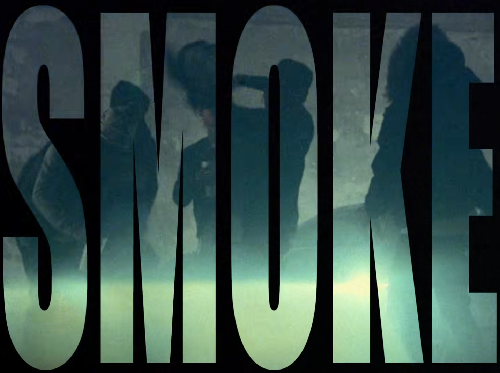
GROUP8VISION의 구상은 언제부터 시작된 건가요?
사실 이름 자체는 [Group 8] 믹스테이프 때부터 준비가 되어 있었어요.
유나이티드 항공을 타면 Group 1부터 Group 8까지 있는데, 지환 감독님이랑 비행기를 탈 때마다 저희는 늘 마지막 그룹인 ‘Group 8’이었어요. 최대한 돈을 아끼려고 제일 싼 표를 끊었으니까. 그래서 둘이 항상 마지막에 탔던 기억이 남아 있었어요. 그래서 저희 슬로건도 "straight2firstclas8"이에요.
지금처럼 구체적인 움직임을 갖추기 시작한 건 작년 8월에 "LIFES LIKE" 찍으러 도쿄에 갔던 때부터였어요. 지금 생각하면 좀 귀엽긴 하죠. 그때 괜히 회사 대표인 것처럼 행동해봤거든요. 다 데려가서 비용도 직접 내보고, 같이 촬영도 하면서 이것저것 겪어본 것 같아요. 사람을 대하거나 친구들과 이야기하는 방식도 좀 바꿔보고, 여러 시도를 해봤죠. 이제 마음이 맞는 친구들끼리 함께하게 된거죠.
AP Alchemy를 나온 뒤에는 인디펜던트 아티스트로 활동했고, 지금은 GROUP8VISION을 준비하면서 대표 역할도 하고 계시잖아요. 아티스트, 인디펜던트, 그리고 대표라는 세 가지 위치를 경험하면서 음악을 바라보는 시선에도 변화가 있었을까요?
인디펜던트가 된 뒤 가장 힘들었던 시기는 초반뿐이었어요. 원래부터 독립해서 활동해보고픈 마음이 있었기 때문에, 지금 돌아보면 그 시간은 저에게 꼭 필요했던 배움의 과정이었다고 생각합니다. 처음엔 메일 보내는 것부터 사소한 업무를 처리하는 법까지 정말 아무것도 몰랐어요. 그때는 ‘나 진짜 이것도 못하는 사람이구나’라는 생각도 했어요.
결국은 몰라서 못했던 거더라고요. 주변에 많이 물어보면서 하나씩 배웠고, 지금은 어느 정도 스스로 처리할 수 있게 됐어요. 그래서 지금은 더 적극적으로 물어보려고 해요. A&R 같은 포지션에도 관심이 있고요.
사실 저희를 레이블이라고 부르긴 하지만, 정확히는 크리에이티브 팀에 더 가까운 것 같아요. 저희가 만들고 싶은 것도 전통적인 레코드 레이블의 형태는 아니에요. 어떤 때는 음악이 중심이 될 수도 있고, 어떤 때는 영상 작업이 중심이 될 수도 있고, 사진 전시가 될 수도 있죠. 앞으로는 패션도 함께할 예정이고요. 그런 의미에서 저희는 크리에이티브 컬렉티브에 가깝다고 생각합니다.
생각보다 훨씬 큰 규모의 그림을 그리고 계시네요.
네. 가능하면 모든 작업을 인하우스로 해결할 수 있는 팀을 만들고 싶어요. 공연 영상같은 비주얼 측면이나 콘텐츠 제작까지 가능한 하나의 팀처럼 움직이려고 하고 있어요. 지금도 앨범 회의를 다 같이 하고 있고, 각자의 발매 시기나 내년 계획도 함께 이야기하면서 움직이고 있어요.
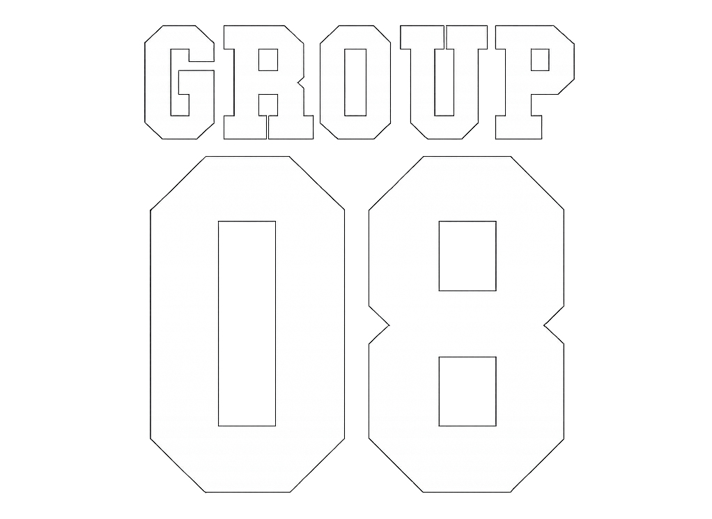
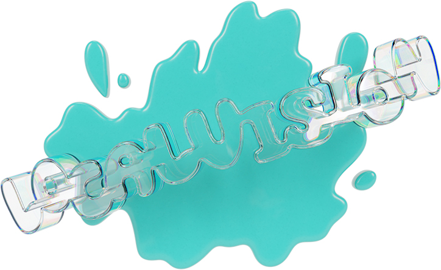
패션 브랜드인 LOCAL VISION SEOUL도 함께 전개하고 계시는데요.
제가 ‘로컬(Local)이라는 단어를 좋아하고, 우리는 서울에서 활동하는 사람들이니까 자연스럽게 LOCAL VISION SEOUL이라는 이름이 만들어졌어요.
제가 이름을 바꾸고 1년 동안 음악을 하면서 동시에 브랜드를 준비했다고 말씀드렸잖아요. 음악이 잘되지 않더라도 바로 다음 단계로 넘어갈 수 있는 준비가 필요하다고 생각했어요. 원래 옷을 좋아하기도 해서 제가 평소 좋아하던 스웻(Sweat) 패션의 무드를 담은 브랜드를 실제 친구들과 함께 만들어보려 한거죠. 다행히 음악과 브랜드 모두 좋은 결과로 이어졌네요(웃음).
GROUP8VISION도 그렇고, LOCAL VISION SEOUL도 그렇고, 이름에 '비전(Vision)'이라는 단어가 공통적으로 들어가네요.
Visionary가 있는 사람들을 좋아하기도 하고, 저 역시 그런 사람이 되고 싶다고 생각하거든요.
어떤 상황에서도 잃지 말아야 하는 것이 분명히 있다고 생각해요. 그게 바로 목적이고, 도착해야 할 골인 지점인 것 같아요. 하지만 그 골이 바로 눈앞에 있을 수도 있고, 훨씬 먼 미래에 있을 수도 있겠죠. 하지만 결국에는 저희 모두가 함께 바라볼 수 있는 공통된 목표가 되고, 그 방향을 제시하는 역할을 하는 것이 바로 '비전'이라고 생각합니다.
그렇다면 우슬라임님이 생각하는 이상적인 목적지는 어떤 모습인가요? 결국 비전을 따라가다 보면 언젠가는 도착하게 될 곳이 있을 텐데요.
‘걱정 없이 음악을 하는 삶’이 가장 이상적인 목적지이지 않을까요? 친구들과 맛있는 거 먹고, 함께 작업하고. 지금보다 조금은 덜 힘들고, 음악 자체를 즐길 수 있는 상태요. 특별히 거창한 목표라기보다는, 그런 시간을 자연스럽게 이어갈 수 있는 환경이 저희가 바라는 곳인 것 같습니다.
이야기를 듣다 보면 먼 미래를 바라보고 계신다는 느낌이 들어요.
멀리 보려고 노력하는 편인 것 같아요. 래퍼로서의 목표라기보다는 인생 전체를 바라보는 시야에 가까워요. 20대 때는 20대답게 열심히 살아야 한다고 생각했고, 30대에도 그 시기에 맞는 가치관이 생길 거라고 생각해요. 물론 중요하게 생각하는 것들은 계속 바뀌겠지만, 결국 제 삶의 목표는 편하게 음악을 하는 거예요.
가사도 현재의 감정을 담고, 사운드도 지금 좋아하는 것을 담고 있어서 지금 이 순간의 감정을 중요하게 생각하시지만, 동시에 굉장히 먼 미래를 보고 계시기도 한 것 같아요. 보통 장기적인 비전이 있으면 음악적으로도 계산을 하게 되는 경우가 생기잖아요. 예를 들면 몇 년 뒤의 유행을 예상하고 움직인다거나.
트렌드를 읽는 건 물론 중요하지만 음악 자체를 계산해서 만들지는 않아요. 오히려 제가 지금 좋아하는 것들을 더 보여주고 싶어요. 그래서 지환 감독님 같은 친구가 필요한 거고요. 영상적인 부분에서 트렌디한 요소를 담을 수도 있고, 저희 팀이 보여줄 수 있는 것들을 다양한 방식으로 보여주려고 하는 거죠.
저희 팀에는 레이도 있고 여러 친구들이 있잖아요. 제가 지금은 프론트맨 역할을 하고 있지만, 어떤 시기에는 다른 사람이 앞으로 나와야 할 수도 있다고 생각해요. 그런 시기를 판단하는 건 전략적으로 생각해야 하지만, 음악 자체는 계산하지 않는 것 같아요. 결국 그게 제 삶이거든요. 저는 여전히 지금의 저를 보여주고 싶고, 그 모습 그대로 사람들을 설득하고 싶어요.
결국 트렌드를 따라가기보다는 스스로 길을 만들고 싶다는 의미군요.
요즘은 아이코닉한 인물이 사라졌다는 이야기 많이 하잖아요. 저는 아직 그런 사람이 세상에 나올 수 있다고 생각해요. 우리 세대에서도 충분히 가능하다고 믿고요. 결국 믿음이 가장 중요한 것 같아요.
그렇다면 우슬라임님이 생각하는 '아이코닉한 사람'의 조건은?
‘자기 것을 계속 하는 사람’. 결국 계속 밀고 나갈 수 있어야 하거든요.
물론 여러 요소들이 따라와야겠죠. 패션도 그렇고, 삶의 방식도 그렇고요. 제가 어릴 때 좋아했던 래퍼들을 떠올려보면 정말 다 멋있었어요. 하이라이트, 일리네어... 음악뿐 아니라 패션도, 라이프스타일도 전부 자기들만의 것이 있었어요. 그런데 지금은 그런 부분이 많이 줄어든 것 같아요. 저는 자기만의 것이 있는 래퍼들이 다시 많아졌으면 좋겠고, 저도 그 안에서 제 역할을 하고 싶어요.
생각해보면 예전에 굵직한 레이블을 만들었던 리더 분들의 당시 나이가 지금 우슬라임님 나이쯤이었잖아요.
지금 우리 또래에도 정말 대단한 아티스트들이 생각보다 많아요. 그래서 지금이 뭔가를 해볼 타이밍이 아닌가 싶어요. 저는 애매한 래퍼로 남고 싶지 않거든요. 뭔가 확실하게 기억되는 사람이 되고 싶어요.
하나의 무브먼트를 만들었던 사람으로.
그냥 ‘멋있었던 형’ 정도로 남고 싶은 게 아니라 그 시대를 대표하는 사람이 되고 싶은 거죠. 제가 그리고 있는 그림이 분명히 있기 때문에 계속 열심히 하고 있습니다.
음악뿐 아니라 삶 전체가 하나의 스타일로 연결돼 있어야 한다는 말씀이군요. 그래서인지 이번 앨범에도 카톤님, 러버보이님 같은 자기 색이 뚜렷한 뮤지션들이 참여한 것 같아요.
저는 뭔가 '띠꺼운' 친구들이 좋아요(웃음). 어린 친구들만이 보여줄 수 있는 특유의 느낌이 있어요. 옷을 입는 방식에도, 랩에도, 태도에도 말이에요. 그런 에너지가 너무 좋아요. 그래서 계속 같이 작업하고 싶은 것 같아요. 개인적으로는 빅걸포가 정말 멋있다고 생각하고요. 제가 말하는 그런 매력이 가장 잘 드러나는 아티스트 중 한 명인 것 같아요.
그런데 강한 개성을 가진 아티스트들과 작업할 때는 소통이 어렵지는 않나요?
오히려 다들 정말 착해요. 실제로 만나보고 깜짝 놀랐어요. 다들 너무 예의 바르고 좋았어요.
의외로 강한 음악을 하는 분들이 실제로는 굉장히 매너 있으신 경우가 많더라고요(웃음).
결국 음악을 좋아하는 사람들이잖아요. 저는 그 안에 순수함이 깃들어 있다고 생각해요.
이번 앨범에 오카시의 매튜님도 많이 참여하셨죠?
믹스와 마스터도 전부 매튜가 맡았고요. 프로듀싱 트랙도 여러 곡 있어요. [WUUSLIME] 앨범 때부터 믹스랑 마스터링 비롯해서 계속 같이 해왔어요. [Bookkyungbanjeom] 역시 믹스, 마스터를 전부 매튜가 맡아줬어요. 계속 함께 작업하고 있는 파트너라고 보면 될 것 같아요.
오카시 멤버들과도 굉장히 오래된 인연을 이어왔네요.
스무 살 때부터 알고 지냈거든요. 제가 그루블린에 있던 때 같은 소속사의 콜드베이 형이 당시 오카시에 소속되어 있었는데, 그때부터 계속 인연이 이어졌어요.
이번 피처링진을 봤을 때 가장 의외였던 분이 러버보이 님이었거든요. 어떻게 함께하게 되신 건가요?
러버보이 특유의 나른한 톤을 정말 좋아해요. 뮤직비디오 보면 특유의 에너지가 느껴지거든요. 패션도 좋고, 본인에게 정말 잘 어울리는 그림체가 있어요. "ERRTHANG GON BE CHILL"라는 트랙에 정말 잘 어울릴 것 같았어요. 저는 피처링을 정할 때 목소리 조합을 많이 보는 편이거든요. 이 트랙에 이 사람 들어오면 정말 좋겠다, 싶으면 그냥 연락해요.
저는 항상 제가 먼저 연락해요. 중간에 다른 사람을 통하는 경우도 거의 없이 직접 DM 보내는 편이에요.
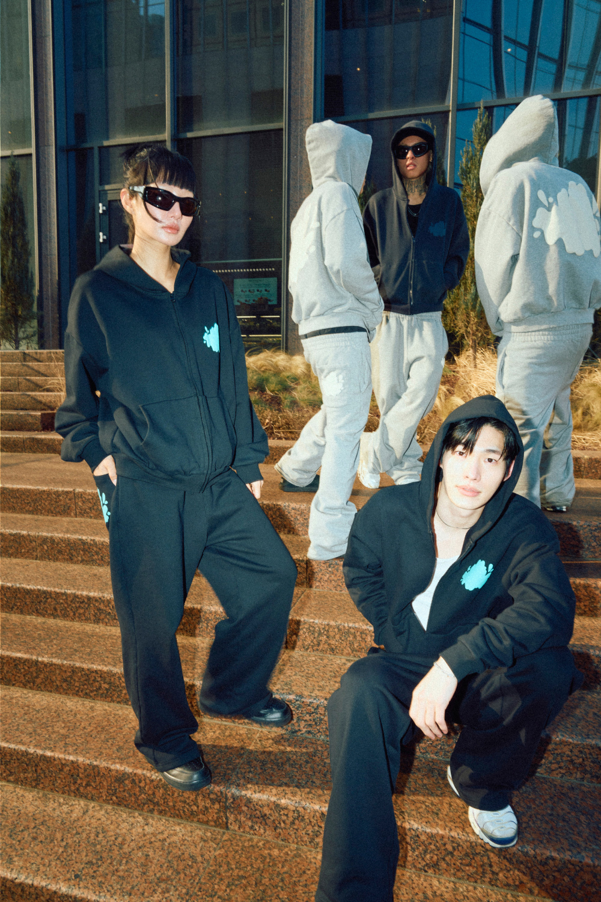
러버보이 님은 음악뿐 아니라 뮤직비디오도 계속 찾아보게 되는 매력이 있는 것 같아요. 요즘 신예 아티스트 분들의 뮤직비디오를 보면 굉장히 독특한 감각들이 느껴지더라고요.
맞아요. 요즘 친구들이 그런 걸 정말 잘하는 것 같아요. 자기만의 세계를 뮤직비디오 안에서 분명하게 보여주는 경우가 많은 것 같아요.
예전에는 특정 롤모델을 정해두고 그 영향을 받아 파생되는 경우가 많았다면, 지금은 정말 각자 하고 싶은 걸 하는 느낌이 강한 것 같아요.
맞아요. 제가 좋아했던 시절의 모습으로 다시 돌아가는 것 같아요.
얼마 전까지만 해도 스타일이 굉장히 획일화되어 있던 시기도 있었잖아요.
저를 보고 음악을 시작한 친구들도 있을 텐데, 이렇게 우리 세대를 보고 영향을 받은 친구들이 진짜 멋있는 걸 해줬으면 좋겠어요. 이게 남들이 멋있다고 생각하는 정답을 따라가는 게 아니라, 자기 스스로 멋있다고 생각하는 걸 해봤으면 좋겠어요.
예전에 인터뷰에서 "래퍼들이 좀 더 용감해졌으면 좋겠다"는 이야기를 하신 적도 있잖아요. 자기 것을 더 과감하게 보여줬으면 좋겠다는 의미기도 했네요.
다들 뭔가 계산하는 듯한 느낌이 강했어요. 물론 각자의 사정도 있고 있을테고, 레이블도 결국 사업체니까 그런 계산이 필요한 부분은 있겠죠. 그래서 그냥 우리가 더 보여주자는 쪽에 가까웠던 것 같아요.
지금은 씬이 변화하고 있다고 느끼시는 걸까요?
네. 분명히 다양해지고 있다고 생각해요. 홍원이네 회사도 그렇고, 저와 같이 작업하는 친구들도 그렇고 정말 다양한 아티스트들이 나오고 있잖아요. 예전보다 훨씬 다채로워졌어요. 다만, 이제는 그걸 ‘더 잘 보여주는 능력’도 중요하다고 생각해요.
‘더 잘 보여주는 능력’이라는 건?
옷을 잘 입는 등의 ‘외적인 모습’도 중요하다고 생각해요. 사람들이 봤을 때 멋있어야 따라 하고 싶어지는데, 그런 부분을 간과하는 분들이 많은 것 같아요. 저는 래퍼라는 직업에 대한 프라이드가 강한 편이라 그런 멋진 모습을 보여줘야 한다고 생각하거든요.
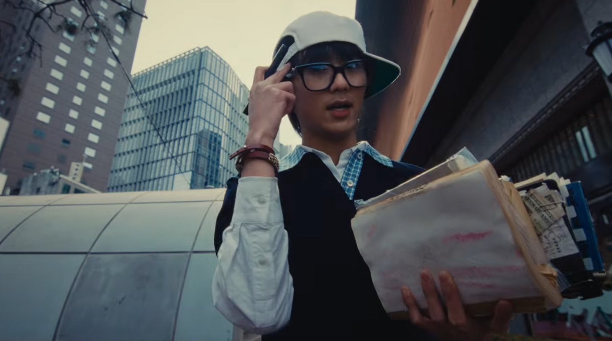
어떻게 보면 음악뿐 아니라 외적인 이미지, 브랜딩도 중요하다는 의미로 들리네요.
어떻게 보면 포장이고, 어떻게 보면 애티튜드죠.
그런데 애티튜드는 단순히 랩을 잘한다고 만들어지는 게 아니라고 생각해요. 어떤 옷을 입고 나가는지, 공연에서 어떤 스타일을 보여주는지도 다 애티튜드의 일종이거든요. 비싼 옷을 입는 것도 하나의 애티튜드인 거죠. 이런 것들이 다른 사람들의 눈에 분명하게 보여야 한다고 생각해요. 그런데 지금은 모두의 스타일, 패션이 비슷해져 버린 것 같아요. 사람들이 보고 '나도 저렇게 해보고 싶다'고 따라 할 만한 포인트가 점점 줄어들고 있는 거 같아요.
GROUP8VISION 역시 이러한 우슬라임님과 취향, 비전이 비슷한 분들끼리 모이는 걸까요?
꼭 그렇지는 않은게, 제가 생각하는 색은 분명히 있지만 굉장히 열려 있는 편이기도 해요. 지금 함께하고 있는 친구들로부터 제가 많이 배우기도 하고요. 앞으로 들어올 친구들과는 더 대화를 나눠봐야겠지만, 꼭 저와 취향이 같을 필요는 있어요.
집단으로서 공유하는 가치는 공유가 필요하다.
A$AP도 그렇잖아요. 멤버마다 스타일은 전부 다르지만, 하나의 팀으로 묶였을 때는 또 분명한 색이 있거든요.
그렇다면 음악과 외적인 이미지 중 하나를 우선순위로 둬야 한다면 어느 쪽이 더 중요하다고 생각하시나요?
당연히 랩이죠. 아웃핏은 고칠 수 있거든요(웃음). 옷 입는 방식은 얼마든지 고쳐줄 수 있는데, 랩은 바뀌는데 정말 오래 걸린다고 생각해요.
우슬라임님께서 지금의 스타일과 톤을 찾게 된 과정도 꽤 오랜 시간이 필요했겠네요.
[Group 8] 믹스테이프 만들 시절부터 계속 연습이 됐던 거죠. 지금도 원하면 예전 톤으로 랩할 수 있어요. 다만 지금 음악에는 안 어울리는 것 뿐이고. 저는 곡에 맞는 톤을 선택하는 거예요. 실제로 이번 앨범 안에서도 트랙마다 톤이 조금씩 다르거든요. 그런 부분은 항상 유연해야 한다고 생각해요. 곡마다 어울리는 목소리가 있고, 거기에 맞춰 움직여야 한다고 생각해요.
개인적으로 우슬라임이라는 이름을 들었을 때 떠오르는 색이 굉장히 선명해졌다고 느껴요. 뮤지션의 이름을 대면 떠오르는 스타일이 있다는 게 굉장히 크다고 생각하거든요.
진심으로 하면 되는 것 같아요. 랩을 뱉을 때도 그게 느껴지거든요.
예전에 오왼 형이랑 [POEMV]의 “12” 처음 작업에 들어갔을 때, 녹음하다가 과호흡이 올 정도로 긴장했어요. 원래 친한 사이였는데도 너무 떨렸고, 메킷레인 팬이기도 했으니까 너무 좋았어요. '내가 여기에 함께하고 있구나'라는 마음이 들었던 거죠. 그러니까 그 정도로 진심이 담긴 가사를 쓰고, 랩을 뱉으려고 하는 것 같아요. 그 과정에서 자연스럽게 자기만의 색깔도 생기는 게 아닐까 싶습니다.
랩 스타일의 변화뿐 아니라 음악을 만드는 태도 자체도 많이 달라졌다고 볼 수 있을까요? 아까 어린 아티스트들만의 '띠꺼움' 이야기를 하셨잖아요. 칠린호미 시절에도 그런 부분이 있었는지(웃음).
그때는 그냥 랩 잘하는 래퍼가 되어야겠다는 마음이 가장 컸던 것 같아요. 오히려 지금이 더 띠껍다고 생각해요(웃음).
이야기를 듣다 보니 이제는 아티스트 우슬라임과 인간 전우성이 거의 하나가 된 것 같다는 느낌도 들어요.
그건 친구들 덕도 큰 것 같아요. 토비랑 세션 같이 하고, 영블레시랑 제이민도 그렇고 또래 래퍼들이랑 정말 많이 작업하거든요. 음악 이야기도 나누고요. 그러면서 훨씬 편하게 랩을 할 수 있게 된 것 같아요. 물론 속으로는 ‘발리면 안 되는데’ 하는 마음도 있죠(웃음).
교포 친구들은 또 펀치-인이 되거든요. 그런 것도 많이 배우고요. 친구들이 많이 기다려주고, 편하게 해보라고 이야기해주고, 그런 경험들이 쌓이면서 많이 열렸던 것 같아요.
방금 펀치-인 이야기가 나와서 말인데요. 요즘은 아티스트들이 이 방식으로 많이 작업하잖아요. 이번 앨범에도 사용됐나요?
“SMOKE”, “WHATEVER”같은 곡이 가사가 쉬운 곡은 가능한데, 저는 가사에 의미를 담는 걸 좋아하는 편이에요.
그러고보니 아까 정규 앨범에서는 의미, 서사가 중요하다고 말씀하셨잖아요. [TONE]을 첫 트랙부터 마지막 트랙까지 하나의 흐름으로 본다면, 어떤 서사가 담겨 있다고 볼 수 있을까요?
정말 하나의 ‘모먼트’인 것 같아요. 작년부터의 저를 담은 앨범이라고 보면 될 것 같아요. 힘든 일도 있었고, 좋은 일도 있었고, 그런 하나하나의 순간들이 담겨 있는 거죠. 앞으로 제가 살아가고 싶은 삶도 담겨 있고요. 중요하게 생각하는 감정, 아침에 눈을 떴을 때의 기분 같은 것들을 표현했어요. 어떻게 보면 머릿속으로만 생각했던 것일 수도 있고, 제가 실제로 경험했던 순간일 수도 있어요. 어느 날 밖에 나갔는데 날씨가 너무 좋을 때가 있잖아요. 그런 걸 마주하는 순간의 기분이 담겨 있는 거죠.
결국 이 앨범은 그런 저의 감정들을 그대로 담아낸 작품인 것 같습니다.
그렇다면 기분의 흐름 자체를 유기적으로 앨범 안에 담았다고 볼 수도 있겠네요.
제 기분보다는 사운드의 결을 중심으로 트랙리스트를 구성했던 것 같아요. 흐름 자체도 사운드의 유기성을 더 중요하게 생각했고요.
청각적인, 사운드 측면으로의 유기성을 말씀하셨던 거네요.
그 두 가지가 사실 같이 움직인다고 생각해요. 사운드에만 치중해 만든 앨범이 아니라면, 하나가 잡히면 다른 하나도 자연스럽게 따라온다고 생각하거든요. 그래서 어떤 것을 먼저 기준으로 잡았는지는 크게 중요하지 않았던 것 같아요.
보통 어떤 순서로 작업하시나요? 먼저 가사나 주제를 떠올린 뒤 그에 맞는 비트를 찾는 편인가요, 아니면 비트를 듣고 거기에 어울리는 이야기를 만들어가는 편인가요?
후자에 가까운 것 같아요. 물론 가사나 라인을 미리 적어둘 때도 있는데, 저는 뮤직비디오를 정말 많이 보거든요. 어떤 비트를 들었을 때 특정 장면이 떠오를 때가 있어요. 마주했던 풍경이나 제가 걸었던 길, 혹은 특정 장면이 머릿속에 스쳐 지나가는 거죠. 그러면 그 이미지에 집중해서 '이렇게 가사를 써야겠다'는 생각을 해요.
개인적으로 우슬라임님의 가사는 개인적인 언어로 쓰여 있다는 느낌을 받았거든요. 그래서 처음 들으면 무슨 이야기인지 바로 이해하기 어려운 경우도 있었어요.
제가 앞으로 보완해야 할 부분일 수도 있다고 생각하지만, 이런 개인적인 이야기를 계속 해야 한다고 생각해요.
가장 개인적인 것이 가장 특별하다고 생각하거든요. 제가 좋아했던 래퍼들의 음악도 그랬어요. 처음 들으면 무슨 이야기를 하는지 잘 모르겠는데, 어느 순간 특정한 한 줄이 꽂히는 거죠. 가사를 자세히 보면 그 안에 감정이 담겨 있고요. 제 음악도 비슷한 것 같아요. 처음에는 잘 들리지 않다가도 가사를 보면서 들으면 갑자기 들리는 순간들이 있거든요. 저는 그런 경험을 사람들에게도 주고 싶어요. 제가 음악을 들으면서 느꼈던 그 감각을요.
근데 꼭 제가 의도한 방식으로만 이해하지 않아도 된다고 생각해요. 어떤 사람은 한 줄의 가사에 꽂힐 수도 있고, 또 다른 사람은 전혀 다른 부분에 꽂힐 수도 있겠죠. 듣는 사람 각자의 삶과 경험이 다르니까 받아들이는 방식도 다를 거라고 생각해요. 저도 같은 앨범을 들어도 어떤 날은 한 구절에 꽂히고, 또 어떤 날은 전혀 다른 부분이 와닿거든요.
그래서 제 음악도 그렇게 들어주셨으면 좋겠어요. 각자가 자기만의 방식으로 받아들이고, 자기만의 문장을 발견했으면 좋겠습니다. 그게 제가 보여주고 싶은 모습이기도 하고요.
서사를 전달하는 방식에도 여러 유형이 있잖아요. 어떤 작품은 명확한 이야기와 해석이 있고, 어떤 작품은 다양한 여지를 열어둔 채 청자가 각자의 방식으로 받아들이게 하기도 하고요. 이번 앨범은 어떠한 방향이라고 생각하세요?
깊게 의도하고 설계한 건 아니지만, 굳이 고르라면 후자에 가까울 것 같아요. 그리고 사실 이 앨범도 결국 제 과정 중 하나라고 생각하거든요. 앞으로도 계속 다음 앨범이 나올 거잖아요. 그래서 뭔가 남겨두고 싶어요. 같은 곡이라도 다른 날 들으면 또 다르게 들릴 수 있으니까요.
실제로 저도 처음 들었을 때와 오늘 다시 들었을 때 느낌이 많이 달랐어요.
그럴 수밖에 없는 것 같아요. 제 음악이 날씨를 많이 타거든요. 특히 뒤쪽 트랙들은 밤에 들으면 더 좋은 곡들이 많아요.
이번 앨범 작업 과정에서 기억에 남는 비하인드가 있다면 소개해주실 수 있을까요?
작업할 때 항상 친구들이 같이 있었던 것 같아요. 녹음할 때 약간 토템 같은 존재가 필요하거든요. 꼭 뭔가를 해주는 건 아니에요. 그냥 옆에 있어주거나 놀고 있어도 돼요. 그래서 이번 앨범도 친구들이랑 같이 놀면서 작업했던 기억이 많이 남은 것 같습니다. 바로 옆에서 어떠냐고 물어볼 수도 있고요. 혼자 작업할 때는 생각이 산으로 가버릴 수도 있는데, 친구들이 있으면 금방 중심을 잡을 수 있거든요. 무엇보다 솔직하게 이야기해줘서 좋아요.
그리고 식케이 형께 곡을 들려드리러 갔을 때는 바로 그 자리에서 피처링을 해주셨어요. 곡을 들려드렸는데 바로 녹음을 시작하시더라고요. 작업 과정 자체보다는 이런 순간들이 더 기억에 남는 것 같아요.
[TONE] 앨범과 관련한 활동도 준비 중이신가요?
개인적으로는 단독 공연을 해보고 싶어요. 이 앨범이 나오기 전까지는 항상 디스코그래피가 조금 아쉬웠거든요. 혼자서 한 시간 이상 공연을 채우려면 생각보다 곡이 많아야 하잖아요. 그런데 이제는 어느 정도 가능하지 않을까 싶어서 실제로 기획해보고 있습니다. 나아가 올해는 계속 활동을 이어갈 것 같아요. 공연도 계속 하고 싶고, 영상으로 보여드릴 수 있는 것들도 더 많이 보여드리고 싶어요. 또 곧 나올 레이의 앨범도 함께 준비해야죠.
그 이후의 계획도 준비되어 있나요?
일단 레이블 컴필레이션 앨범을 만들어보려고 해요. 본격적인 런칭을 알리면서 동시에 공개하고 싶어요. 요즘 멤버들을 확정하는 데 시간을 쓰고 있는데, 먼저 지금 있는 멤버들로 작업을 시작할 것 같아요. 그전에 제 개인 작업물도 계속 나와야 할 것 같으니 믹스테이프도 하나 내보고 싶네요. 20 트랙 이상 들어가는 진짜 랩으로 가득한 앨범? 계속 작업하게 될 것 같아요. 가장 중요한 건 지치지 않는 것이겠네요.
지치면 또 캘리포니아에 다녀오셔야겠네요.
맞아요(웃음). 9월에 또 다녀올 생각이에요.
어느덧 인터뷰도 마무리할 시간이 됐네요. 마지막으로 HAUS OF MATTERS 독자분들과 팬분들께 한 말씀 부탁드립니다.
원래 이런 말을 잘 못하는 편이지만(웃음). 이렇게 인터뷰를 통해 제 이야기를 할 수 있는 자리가 많지 않은데, 좋은 기회를 만들어주셔서 정말 감사드립니다. 이번 앨범 재밌게 들어주셨으면 좋겠어요.
감사합니다. 우슬라임이었습니다!